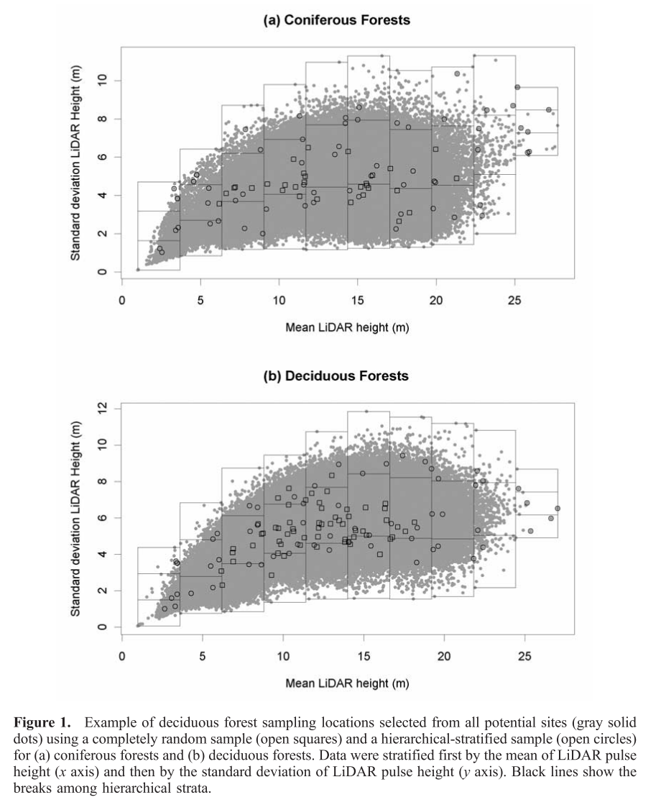
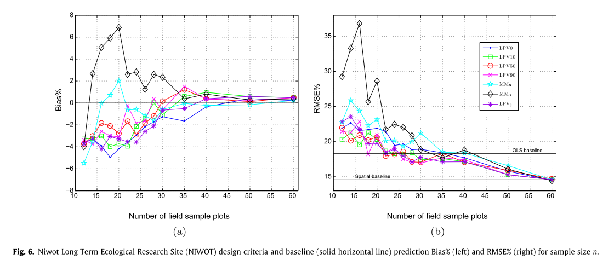
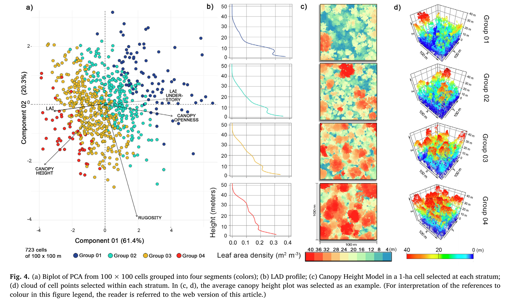

Structurally Guided Sampling Review
(McRoberts, Gobakken, and Næsset 2012) outline the essence of structurally guided sampling:
Stratified estimation is a statistical technique that can be used to increase the precision of estimates without increasing sample sizes. The essence of stratified estimation is to aggregate observations of the response variable into groups or strata that are more homogeneous than the population as a whole. The population mean and its variance are estimated as weighted means ofwithin-strata means and variances where the weights are based on strata sizes. If the stratification is accomplished prior to sampling and the within-stratum variances are known or can be easily estimated, then greater precision may be achieved by selecting within-strata sampling intensities to be proportional to within-strata variances (Cochran, 1977).
Following literature review I present a number of implementations that have been used to guide the stratification of ALS-derived structural variables for locating representative sample plots.
Studies including (Leiterer et al. 2015) and (Kane et al. 2010) suggest that the information in the ALS data may be condensed to a few metrics. Many of the studies reviewed seem to adopt this by selecting a low number of metrics which they use to stratify the landscape and consequently sample within.(Fedrigo et al. 2018) further outlined:
“Lidar metrics may be useful for forest stand classification if they differentiate classes of interest (Wulder et al., 2008). The separation of the data into vertical layers allows metrics to be derived for specific forest strata, which may increase the discrimination of multi-strata stand types. The selection of breaks that define these strata can be based on field knowledge or identified statistically from lidar profiles (Lefsky et al., 1999; Zhang et al., 2011).”
An additional note of interest is that a great deal of research in the field of digital soil mapping can be applied to structurally guided sampling. Studies including (Carré, McBratney, and Minasny 2007), (Ma et al. 2020), and (Malone, Minansy, and Brungard 2019) were invlauable for understanding how to use auxillary variables to determine effective sampling protocols - especially in the context of Lahin Hypercube Sampling.
Stratification approaches
(Hawbaker et al. 2009)
Used ALS mean and SD to stratify. First they separated forest types then 10 strata were derived suing mean height. Within each stratum, 3 additional sub-strata were created using SD. This produced a total of 30 stratifications where one coniferous forest and two deciduous forest locations randomly selected. They compared samples taken from strata with a random sample finding that: >Prediction errors from models constructed using a random sample were up to 68% larger than those from the models built with a stratified sample. The stratified sample included a greater range of variability than the random sample.

(Dalponte et al. 2011)
They analyzed 2 aspects of ground reference data collection.
- The positioning error of the ground plots
- The optimal number of training plots.
They had a large collection of samples >700 and systematically analyzed how the reduction of sample numbers influenced accuracy of attribute estimates.
They tested the effect of error in estimate related to distance the center point of the plot was moved.
The decrease was at a minimum when the displacement was less than 5 m, while it was considerable over 10 m.
They did random downsampling of the sample plot number and stratified downsampling of the sample plot number. They used the methods from (Hawbaker et al. 2009) and (Maltamo et al. 2011) for stratified downsampling.
Comparing the results obtained with the proposed stratified sampling method and the other three methods considered (see Table 3), one can see that the proposed stratified sampling method was the one that provided the best results for both sets.
The new protocol allowed us to obtain promising results for the considered dataset: using only 53 training plots, instead of 534 in the original dataset, we obtained the same results for the validation set.
(Maltamo et al. 2011)
Used divided P90 into 12 even parts. A near equal number of sample plots were systematically chosen within each of these 12 parts according to the range of VEG (ratio of vegetation points and ground points). To representatively sample the 12 parts and to cover the extremes, selection intensity was higher in the p90 range range with the lowest number of previously established plots. The use of ALS data as a priori information provided the most accurate results.
They also provide the an important statement:
“One should keep in mind that in real world applications ,some given ALS variables will have to be used for selection of plots regardless of which and how many biophysical properties the inventory aims at estimating. Thus, some ALS variables will work better for certain biophysical properties than for others. An appropriate way of choosing suitable ALS variables could be to select them according to the relative importance of the biophysical properties to be estimated.for volume and number of stems. plots. REduced total sample size incrementally.”
(Junttila et al. 2013)
Used a number of approaches including a space filling design, which attempts to sample uniformly across a feature space. The Maximin design attempts to cover a feature space as uniformly as possible given a fixed number of sample points. It maximizes the minimum distance between plots.
The results indicate that choosing the plots in a way that ensures ample coverage of both spatial and feature space variability improves the performance of the corresponding models, and that adequate coverage of the variability in the feature space is the most important condition that should be met by the set of plots collected.

(Valbuena et al. 2013)
Used the Cover metric to privde a idea of the density of each forest area. The justified that cover influenced the relation between other metrics and the forest response and, therefore, it was included in all the models computed.
(Grafström and Ringvall 2013)
Presents the (Grafström and Lisic 2019) package. and does comparisons between Simple random sampling (SRS) and:
Local pivotal method with x and y coordinates (LPM-xy)
to make sure the sample is well spread geographically. The Euclidean distance is used without standardization because the spatial coordinates are on the same scale.
Local pivotal method (LPM)
XY and four selected ALS variables as auxiliary variables. The samples are well spread geographically and well spread in the four ALS variables. The distance function (eq. (3)) is used.
Cube method (CM)
The samples are balanced on the four ALS variables. The x and y coordinates are not used for this method, because it does not make sense to balance on geographical coordinates.
Local cube method (LCM)
The samples are balanced on the four ALS variables and the x and y coordinates are used to make sure the sample is well spread geographically. The Euclidean distance is used in the geographical space.
They found that spreading the sample well in geographical space is important. Spreading the sample well in all auxiliary variables (LPM) and using the HT estimator was in all cases a more efficient strategy than SRS followed by a calibration estimator.
Spreading the sample well is more efficient than balancing (or SRS followed by calibration) if the relationship between the target and the auxiliary variables is nonlinear, which is why it performs better (see Tables 2 and 3).
The final order of the designs combined with the calibration estimator was (from best to worst) LCM, LPM, LPM-xy, CM, and SRS. We get the best results when using the information both in the design and the estimator. Hence, we can conclude that using auxiliary information in the design is very important. "
All three designs, LCM, LPM, and CM, had very good design effects. The reduction of the variance of the HT estimator was for the main target variable volume up to 75% compared with SRS.
(Grafström, Saarela, and Ene 2014)
Continuation of previous study highlighting value of sampling methods.
A possible drawback of the LPM compared with more simple methods such as systematic random sampling is that sample se- lection is computationally intensive for large populations. This is a problem because the population size (number of pixels) tends to be rather large in forest applications with auxiliary data from, e.g., airborne LiDAR, making it practically impossible to apply the LPM as it is. To deal with this problem, we introduce a new rapid suboptimal implementation ofthe LPM that can be applied to large populations.
With the LPM, there is no stratification or other difficult design choices; we only need to define distance. Modelling is not really necessary, which means no complicated formulas. Yet this is a very competitive strategy in many cases. It has the advantage of being intuitive and simple, which should not be underrated. It also allows us to keep the traditional design-based approach, while still taking advantage of powerful auxiliary information.
With the LPM, there is no stratification or other difficult design choices; we only need to define distance. Modelling is not really necessary, which means no complicated formulas. Yet this is a very competitive strategy in many cases. It has the advantage of being intuitive and simple, which should not be underrated. It also allows us to keep the traditional design-based approach, while still taking advantage of powerful auxiliary information.
(Niemi and Vauhkonen 2016)
Used ALS textural CHM metrics (HIST,PATCH,GLCM,LBP) for pre-stratification of the inventory area. They tested the strength of the relationship between metrics and central attributes of forest growing stock (Vol,BA,Diam). It was found that the dispersion of the clusters derived in an unsupervised mode could be used as an indicator for prioritizing the plots to be measured as the sample to form the reference data for the wall-to-wall models.
(Valbuena et al. 2017)
Used a rule based method to stratify forest areas using Lmoments including Lcv and Lskew.
(McRoberts, Chen, and Walters 2017)
Modeling inventory attributes with ALS metrics. BA was considered as an “integrator of all the response variables” and was used as the basis for constructing strata using a lonear model. Predictions of BA were then scaled by the largest BA prediction,multiplied by 100, then assigned 1 of 100 potential strata. Strata were then aggregated these into 4,6,8 strata with approximately equal proportion of study area.
Stratifications that are most effective with respect to minimizing variances are based on variables that are closely related to the response variable or variables of interest. When multiple response variables are to be estimated simultaneously, the same stratification must be used for all response variables to ensure compatibility.
Results showed they were able to: >Reduce sampling intensity by up to 35% without losing accuracy in the estimators. Relative to the simple random sampling estimators that used no stratification, use of four strata decreased SEs by 29.0%–38.1%, depending on the response variable; relative to four strata, use of six strata reduced SEs by 2.3%–7.3%; and relative to six strata, use of eight strata reduced SEs by no more than 4% and for two response variables actually increased SEs.
From an operational perspective, the results of the study suggest that multivariate, airborne laser scanning-assisted inventories could be fairly easily implemented, subject to availability of the airborne laser scanning data.
(Malone, Minansy, and Brungard 2019)
They provide an indepth description of how to implement and improve the outputs of Latin Hypercube sampling, providing a coded example of how to incorporate already acquired samples accross the landscape. They specify a method to boostrap sample size followed by the application of multiple methods to determine the optimal sample number to use based on auxillary data.
(Papa et al. 2020)
Compared simple random sampling to stratified sampling within strata groups. Used hierarchical cluster analysis for formation of strata. Clusters were used for sub-sampling. The number of clusters was established by the Elbow method. Clusters were validated with an ANOVA post-hoc Tukey test.
Varying size of metric cells (1, 0.5, 0.25 ha) were tested. The stratified sampling was simulated by using weighting distributed by strata, so that each segment was the same sample size, whereas no weighting was used for the simulation in the case of the simple random sampling.
For each level of sampling size (number of plots in the inventory), 1000 iterations were performed, and their mean and standard deviation were summarized in order to produce a graph of relative uncertainty (standard error/global mean) as a function of sample intensity (proportion of total area sampled, in %).


(Ma et al. 2020)
They compare latin hypercube sampling and feature space coverage sampling for predicting soil classes. They detail specific functions to use for latin hypercube sampling and feature space coverage sampling. Sampling pools of varying sizes are compared to simple random sampling in a number of modeling approaches. Final results indicated that:
1)In both study areas the median overall accuracy with FSCS washigher than those with CLHS and SRS over all sample sizes and crossall three prediction methods. The median overall accuracy with CLHS was only marginally larger than with SRS. 2)There was a significant negative correlation betweenMSSSDandoverall accuracy, whereas no such correlation was found betweenO1 + O3and overall accuracy.•The coefficient of variation in overall accuracy among samples se-lected using FSCS was smaller than these using CLHS and SRS at thesame sample sizes. 3)With CLHS the variation in overall accuracy among samples waslarge, so that there is a serious risk that a particular sample mightlead to a low overall accuracy. 4)FSCS-RF is the most accurate combination of sampling and predic-tion for both study areas
Results indicated that feature space coverage sampling could be a viable method for locating samples.
References
Carré, F., Alex B. McBratney, and B. Minasny. 2007. “Estimation and potential improvement of the quality of legacy soil samples for digital soil mapping.” Geoderma 141 (1-2): 1–14. https://doi.org/10.1016/j.geoderma.2007.01.018.
Dalponte, Michele, Cristina Martinez, Mirco Rodeghiero, and Damiano Gianelle. 2011. “The role of ground reference data collection in the prediction of stem volume with LiDAR data in mountain areas.” ISPRS Journal of Photogrammetry and Remote Sensing 66 (6): 787–97. https://doi.org/10.1016/j.isprsjprs.2011.09.003.
Fedrigo, Melissa, Glenn J. Newnham, Nicholas C. Coops, Darius S. Culvenor, Douglas K. Bolton, and Craig R. Nitschke. 2018. “Predicting temperate forest stand types using only structural profiles from discrete return airborne lidar.” ISPRS Journal of Photogrammetry and Remote Sensing 136: 106–19. https://doi.org/10.1016/j.isprsjprs.2017.11.018.
Grafström, Anton, and Jonathan Lisic. 2019. BalancedSampling: Balanced and Spatially Balanced Sampling. http://www.antongrafstrom.se/balancedsampling.
Grafström, Anton, and Anna Hedström Ringvall. 2013. “Improving forest field inventories by using remote sensing data in novel sampling designs.” Canadian Journal of Forest Research 43 (11): 1015–22. https://doi.org/10.1139/cjfr-2013-0123.
Grafström, Anton, Svetlana Saarela, and Liviu Theodor Ene. 2014. “Efficient sampling strategies for forest inventories by spreading the sample in auxiliary space.” Canadian Journal of Forest Research 44 (10): 1156–64. https://doi.org/10.1139/cjfr-2014-0202.
Hawbaker, Todd J., Nicholas S. Keuler, Adrian A. Lesak, Terje Gobakken, Kirk Contrucci, and Volker C. Radeloff. 2009. “Improved estimates of forest vegetation structure and biomass with a LiDAR-optimized sampling design.” Journal of Geophysical Research: Biogeosciences 114 (3): 1–11. https://doi.org/10.1029/2008JG000870.
Junttila, Virpi, Andrew O. Finley, John B. Bradford, and Tuomo Kauranne. 2013. “Strategies for minimizing sample size for use in airborne LiDAR-based forest inventory.” Forest Ecology and Management 292: 75–85. https://doi.org/10.1016/j.foreco.2012.12.019.
Kane, van R., Robert J. McGaughey, Jonathan D. Bakker, Rolf F. Gersonde, James A. Lutz, and Jerry F. Franklin. 2010. “Comparisons between field- and LiDAR-based measures of stand structural complexity.” Canadian Journal of Forest Research 40 (4): 761–73. https://doi.org/10.1139/X10-024.
Leiterer, Reik, Reinhard Furrer, Michael E. Schaepman, and Felix Morsdorf. 2015. “Forest canopy-structure characterization: A data-driven approach.” Forest Ecology and Management 358: 48–61. https://doi.org/10.1016/j.foreco.2015.09.003.
Ma, Tianwu, Dick J Brus, A-xing Zhu, Lei Zhang, and Thomas Scholten. 2020. “Geoderma Comparison of conditioned Latin hypercube and feature space coverage sampling for predicting soil classes using simulation from soil maps.” Geoderma 370 (April): 114366. https://doi.org/10.1016/j.geoderma.2020.114366.
Malone, Brendan P, Budiman Minansy, and Colby Brungard. 2019. “Some methods to improve the utility of conditioned Latin hypercube sampling,” 1–17. https://doi.org/10.7717/peerj.6451.
Maltamo, M., O. M. Bollandsås, E. Næsset, T. Gobakken, and P. Packalén. 2011. “Different plot selection strategies for field training data in ALS-assisted forest inventory.” Forestry 84 (1): 23–31. https://doi.org/10.1093/forestry/cpq039.
McRoberts, Ronald E., Qi Chen, and Brian F. Walters. 2017. “Multivariate inference for forest inventories using auxiliary airborne laser scanning data.” Forest Ecology and Management 401: 295–303. https://doi.org/10.1016/j.foreco.2017.07.017.
McRoberts, Ronald E., Terje Gobakken, and Erik Næsset. 2012. “Post-stratified estimation of forest area and growing stock volume using lidar-based stratifications.” Remote Sensing of Environment 125: 157–66. https://doi.org/10.1016/j.rse.2012.07.002.
Niemi, Mikko T., and Jari Vauhkonen. 2016. “Extracting canopy surface texture from airborne laser scanning data for the supervised and unsupervised prediction of area-based forest characteristics.” Remote Sensing 8 (7): 1–21. https://doi.org/10.3390/rs8070582.
Papa, Daniel de Almeida, Danilo Roberti Alves de Almeida, Carlos Alberto Silva, Evandro Orfanó Figueiredo, Scott C. Stark, Ruben Valbuena, Luiz Carlos Estraviz Rodriguez, and Marcus Vinício Neves d’Oliveira. 2020. “Evaluating tropical forest classification and field sampling stratification from lidar to reduce effort and enable landscape monitoring.” Forest Ecology and Management 457 (September 2019). https://doi.org/10.1016/j.foreco.2019.117634.
Valbuena, Rubén, Matti Maltamo, Lauri Mehtätalo, and Petteri Packalen. 2017. “Key structural features of Boreal forests may be detected directly using L-moments from airborne lidar data.” Remote Sensing of Environment 194: 437–46. https://doi.org/10.1016/j.rse.2016.10.024.
Valbuena, Rubén, Petteri Packalen, Lauri Mehtätalo, Antonio García-Abril, and Matti Maltamo. 2013. “Characterizing forest structural types and shelterwood dynamics from Lorenz-based indicators predicted by airborne laser scanning.” Canadian Journal of Forest Research 43 (11): 1063–74. https://doi.org/10.1139/cjfr-2013-0147.